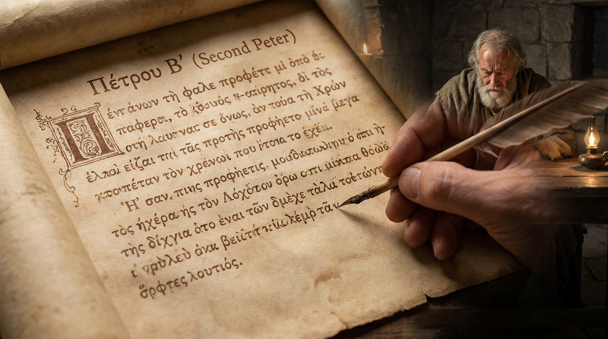

O Conhecimento da Verdade e o Dia do Senhor
A Segunda Carta de Pedro foi escrita pouco antes do martírio do apóstolo. Diferente da primeira carta, que tratava da perseguição externa, esta lida com perigos internos: falsos mestres que distorciam a verdade cristã, viviam na imoralidade e zombavam da promessa da segunda vinda de Jesus. Pedro escreve com urgência para alertar a igreja, incentivando o crescimento contínuo na graça e no conhecimento de Cristo. Ele reafirma a veracidade e inspiração divina das Escrituras e explica que a aparente demora da volta de Cristo é, na verdade, a paciência de Deus, dando tempo para que as pessoas se arrependam antes do julgamento final.
Ficha Técnica
- Autor: O apóstolo Pedro.
- Tema Principal: O combate aos falsos mestres, a defesa da verdade bíblica e a certeza do Dia do Senhor.
- Versículo-Chave: "Cresçam, porém, na graça e no conhecimento de nosso Senhor e Salvador Jesus Cristo. A ele seja a glória, agora e para sempre! Amém." (2 Pedro 3:18)
Estrutura
- O crescimento nas virtudes cristãs e a confirmação da vocação (Cap. 1:1-11)
- A confiabilidade do testemunho apostólico e da profecia das Escrituras (Cap. 1:12-21)
- Aviso e condenação dos falsos mestres e suas práticas corruptas (Cap. 2)
- A zombaria nos últimos dias, a certeza da volta de Cristo e a promessa de novos céus e nova terra (Cap. 3)